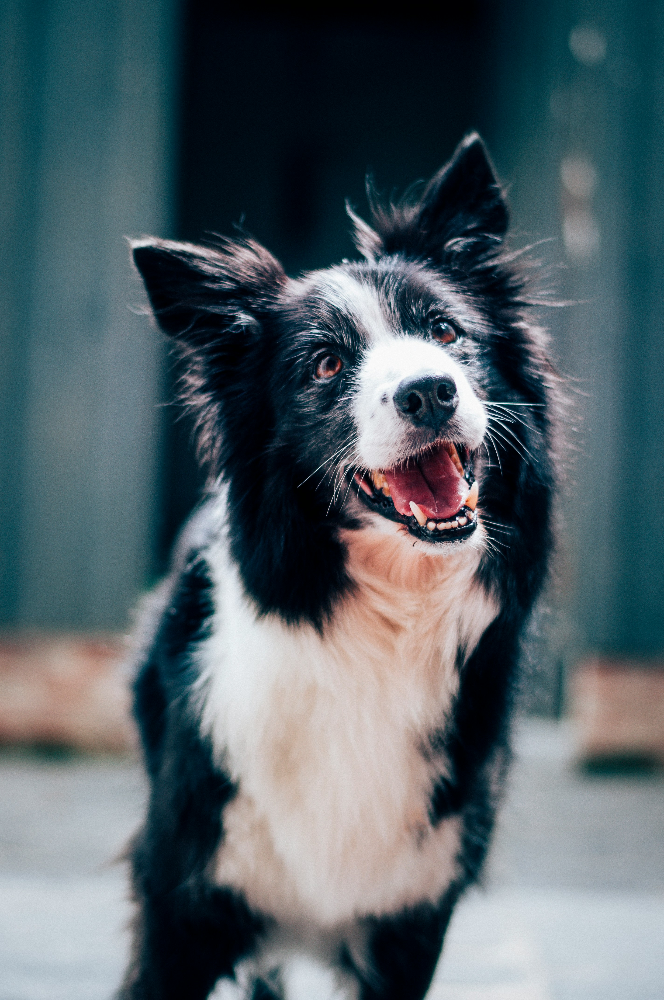
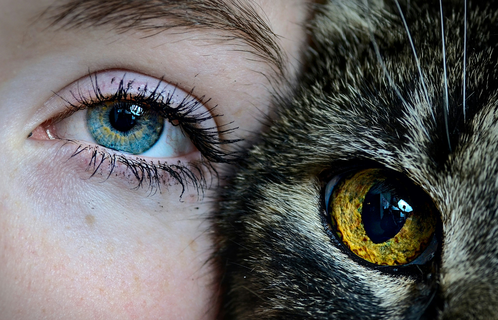

For dogs who eat homemade & raw
Know what your dog is actually eating.
Build a meal from real ingredients and see — instantly — whether it's nutritionally complete. NRC / AAFCO targets. Honest data. No faked numbers.
Join the waitlist
Build a meal from real ingredients and see — instantly — whether it's nutritionally complete. NRC / AAFCO targets. Honest data. No faked numbers.
Join the waitlistof homemade dog diets are nutritionally incomplete — gaps you can't see in the bowl, that compound over months

Most home-cooked and raw recipes run short on calcium, the calcium-to-phosphorus ratio, zinc, or vitamin E. Gaps you can't taste in the bowl, that add up over months.
PetFuel does the nutrient math so you don't need a spreadsheet or a degree in animal nutrition. Real science. Surface-level simplicity.
Search real ingredients and set the grams. Calories and macros update live — backed by USDA FoodData Central, the same database researchers use.
Get a completeness score against your dog's NRC/AAFCO life-stage targets, with every shortfall named and ranked. No guesswork, no averages.
Apply a whole-food fix to close the gaps, then track completeness week by week — so you see the diet improving, not just today's score.
Your dog can't tell you what's missing.
A home-cooked meal can look complete — chicken, sweet potato, kale. What's invisible is the balance: calcium ratios, zinc levels, vitamin E. PetFuel makes the invisible visible.
Join the waitlist
Computed from USDA ingredient data — because every gram is accounted for. You see exactly where your dog's diet stands against NRC/AAFCO targets.
Pet-food labels don't publish micronutrients — so we show only what's actually there: calories, macros, and the manufacturer's AAFCO "complete & balanced" status. We won't invent numbers.

PetFuel is built dog-first — cats have different nutritional requirements and deserve the same precision. We're designing their profiles next.
No. PetFuel is an informational nutrition tool, not a substitute for your vet. Illness, weight issues, or special diets should go through your veterinarian. We'll always point you there.
Dogs first. Cats are the planned next step — they have distinct nutritional requirements and will get their own science-based profiles.
Ingredient nutrition comes from USDA FoodData Central. Requirement targets come from NRC and AAFCO life-stage profiles. For packaged foods we show only what's on the label.
We're building toward an iOS launch. Follow Scarabyte for updates on the release date.